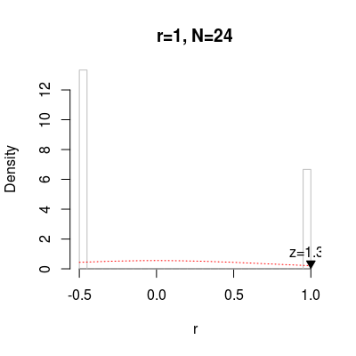
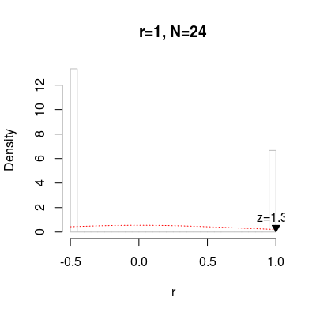
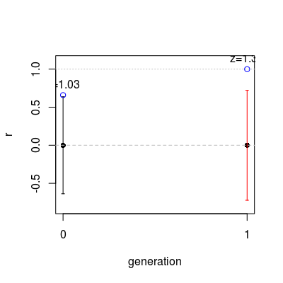

mantel.file(filename = NULL, sep = "\t", header = FALSE, stringcolumns = 1, meaningcolumns = -c(stringcolumns, generationcolumn), generationcolumn = NULL, test.args = NULL, ...)
stringcolumns should be a single index/name.Reads the given .csv file and runs Mantel tests on it, optionally plotting
the results. Plotting is controlled solely through the ... arguments
which are passed on to mantel.development and
plot.mantel respectively.
If none of the column-arguments are specified it is assumed that the first
column gives the strings and all remaining columns encode the different
meanings. See mantelexample.csv for a minimal example.
mantel.file(system.file("minimalexample.csv", package="mantel"), plot="r")Permutation space is small, enumerating all 24 possible permutations. Warning message: The sample of randomised r's is not normally distributed, use that z score with a grain of salt
veridical mean sd z p.value p.smoothed sample.size msample 0 1 0 0.7223151 1.384437 0.36 NA 24 1, -0.5,....mantel.file(system.file("minimalexample.csv", package="mantel"), plot="r", test.args=list(maxtrials=10, conflate=TRUE))Warning message: Specified conflate=TRUE, but there was nothing to conflate. Warning message: The sample of randomised r's is not normally distributed, use that z score with a grain of salt
veridical mean sd z p.value p.smoothed sample.size 0 1 -0.35 0.4743416 2.84605 0.1818182 NA 10 msample 0 1, -0.5,....mantel.file(system.file("generationsalongrows.csv", package="mantel"), plot="r", generationcolumn=4)Permutation space is small, enumerating all 24 possible permutations. Permutation space is small, enumerating all 24 possible permutations. Warning message: The sample of randomised r's is not normally distributed, use that z score with a grain of salt
veridical mean sd z p.value p.smoothed sample.size 0 0.6591831 3.699219e-17 0.6371101 1.034645 0.36 0.1504173 24 1 1.0000000 0.000000e+00 0.7223151 1.384437 0.36 NA 24 msample 0 0.659183.... 1 1, -0.5,....